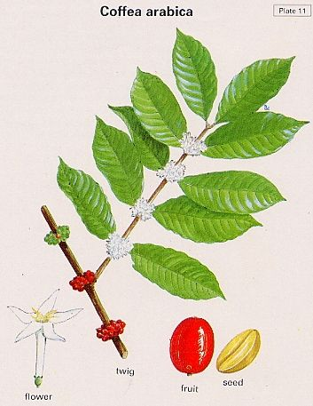

|
ECONOMICALLY
IMPORTANT PLANTS OF INDIA |
| Under-utilized Food and Fodder species and their wild relatives | Contributed by Ms.M.L Annapurna And Dr. Dhanapal, UAS, Bangalore |
Coffea arabica Linn.
Taxonomic Details

----- Correct Name
----- Classification
----- Synonyms
----- Common Names
Other Biological Details
----- Habit and Habitat
----- Diagnostic Features
----- Reproductive Biology
---------- Breeding System
---------- Phenology
---------- Pollinators
---------- Seed Biology
----------Seed Germination
------ Cultivation
----- Major Pests and Diseases
Economic Potential and Uses
----- Parts Used
----- Uses
----- Harvesting Practices
----- Produce and Products
----- Chemistry
----- Processing Techniques
----- Other uses
----- Economic Potential to the
Country
----- Export Potential
Miscellaneous Information
Literature
DIAGNOSTIC FEATURES
Leaves opposite, dark green, glassy, elliptical, acuminate-tipped, short petioled,
5.20cm long, 1.5-7.5 cm broad, flowers white, fragrant, in axillary clusters,
opening simultaneously, 8.12 days after wetting, Carolla tubular, 1cm long,
5v lobed; calyx small cup shaped;fruit a drupe, about 1.5cm long,oval elliptic,
green when mature, ripening yellow and then crimson, black upon drying, 7-9
months to maturity, seeds usually 2, ellipsoidal, 8.5-12.5 mm long, inner surface
deeply grooved, consisting mainly of green corneous, endosperm and small embryo.
Breeding System :
Phenology :
Pollinators:
Seed Biology :
Seed Germination :
Cultivation:
Propagation is usually by seed; howevr, buddding, grafting, and cuttings have
been used. Traditional methods on virgin soil is to put 20 seeds in hole 3.5
x 3.5 m apart at beginning of rainy season. In, Brazil, a more succesful method
is to raise seedlings in shaded nurseries. At 6-12 months, seedlings are taken
to fields, hardened, and then planted on contoured fields. Plants may shaded
by taller trees or left unshaded. Coffee is often intercropped with food crops
such as corn, beans, or rice during the first few years. Clean weed control
is necessary throuthout the season. Pruning is cpommon in some parts of India.
Mulches and green manures are gradually being replaced by chemical fertilizers.
Typical application consists of 175g N per bush, 100g P and 175g K. P and K
are added in two applications and N added over a longer period with 4-5 applications.
MAJOR PESTS & DISEASES
Pests:
Diseases:
Parts used
Beans, Leaves, Twigs.
Harvesting
Practices
Avrage economic age of plants is 30-40 years, with some 100 year old
plantations still bearing. Trees come into bearing 3-4 years afetr planting
and are in full bearing at 6-8 years. Fruits mature 7-9 months after flowering.
Selective picking of rope red fruits produces highest quality. Crop ripens over
a period of several weeks. In Brazil all berriesare stripped at one time onto
ground cloths, usually in April to June; in Ethiopia, harvest season is October
to December after the rainy season. Berries are dried in sun; in some humid
areas artificial heat is used. Depulping afterpicking is increasingly practiced.
Yield; Ethiopia-200-300 kg/ha/year of clean coffee & a max. of 1
MT/ha
Brazil-400 kg/ha & max. of 6600 kg/ha
A lowest production of 120 kg/ha in Sao Time and a highest figure of 1736 kg/ha
in SriLanka has been recorded.
Produce and Products
Coffee.
Chemistry
According to Tiscornia et al. the sterol fraction of coffee seed oil contains
45.4-56.6%sitosterol; 19.6-24.5% stigmosterol, 14.8-18.7% campesterol, 1.9-14.6%
5-avenasterol, 0.6-6.6% 7-stigmasterol and traces of cholesterol and 7-stigmasterol.
Air dried coffee pulp contains 1.34% N; 0.11% P2O5 and 1.5% K2O. Leaves are
reported to contain, per 100g, 300 calories, 6.4% water, 9.3% protein, 5.5g
fat, 66.6g total carbohydrates, 17.5g fibre, 12.2g ash, 1910 mg Ca, 170mg P,
96.6mg Fe, 2360 micro gram Carotene equivalent, 0.21mg riboflavin and 5.2 mg
niacin. Seeds contain per 100 g, 203 calories, 6.3% water, 11.7g protein, 10.8
g fat, 68.2g total carbohydrates, 22.9 g fibre, 3.0g ash, 120mg Ca, 178mg P,
2.9mg Fe, 20 mega bete carotene equivalent, 0.22 mg thiamine, 0.6mg riboflavin
and 1.3mg niacin.